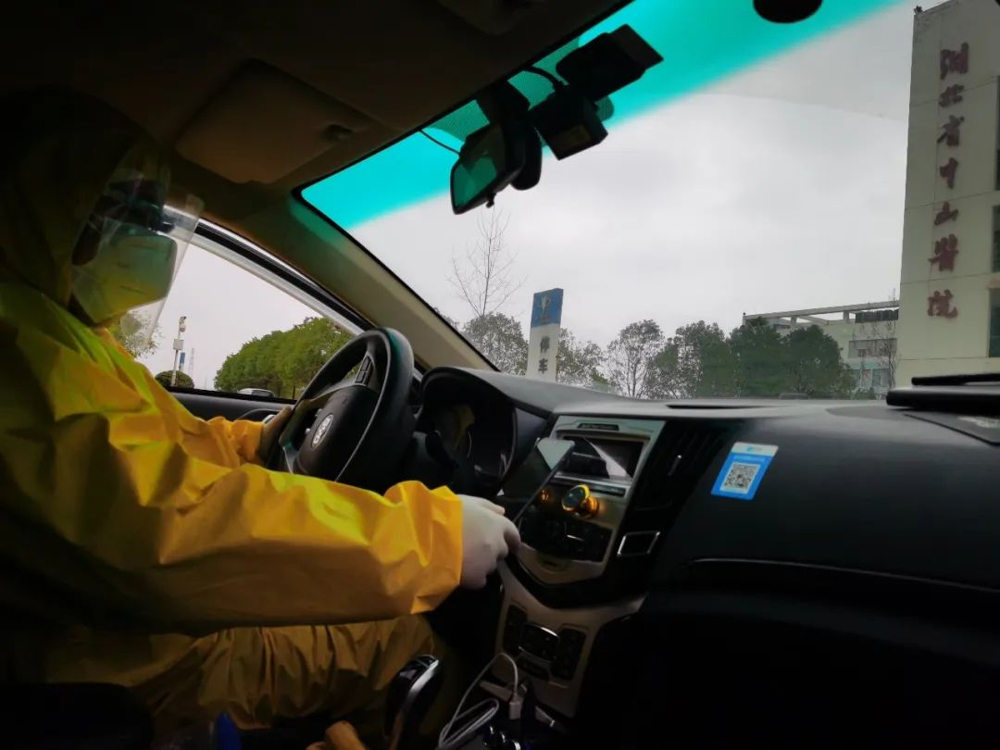

那些隐秘的，伤心的，无畏的故事，都留在了他们车上
原文链接 备份链接 除了牛奶和饼干，司机的后座上常会捡到医生和护士们留下的礼物，有时候是一罐八宝粥，或者一枚珍贵的N95口罩。 文 | 林秋铭 编辑 | 金匝 1 如果没有这场疫情，今年春节，52岁的李明和他的妻子将会出现在希腊。这是他和 …

在曾经川流不息的都市中，
他们是城市交通最有力的一道保障

武汉某医院内病房患者 摄：黄孝光
至今回想起来，曾洪波仍然觉得不可思议，因为“一天之内要召集成立一个超过1300人的车队”。
他还是一头扎了进去。武汉前线，他把团队搬到了仓库，方便办公。后方，滴滴程序员们也在焦灼中加班，研发新的程序。
除夕夜，临时召集起来的保障车队司机们开始上岗。这个“不可能的任务”被一家互联网公司完成了。
一天完成上千人保障车队组建
1月23日武汉“封城”后，公共交通停运，城市被紧急按下了暂停键。很快，滴滴在武汉成立了一线指挥部，曾洪波担任指挥部负责人，任命是由滴滴出行创始人兼CEO程维亲自下达的。
1月24日，武汉市新型肺炎防控指挥部发布第8号通告，全市紧急征集6000台网约车和出租车分配给中心城区，由社区居委会统一调度使用，包括滴滴在内的多家公司参与其中。
一天时间召集1000多名司机，曾洪波的第一反应是“不可能的任务”，但他低估了司机们的热情。结果是，这些司机都在一天内召集完毕，并完成社区分组。
除夕上午发出召集令后，50多家租赁公司立即给旗下司机发出了报名表。靠着微信群的搭建和合作公司的推荐，到1月25日下午，1000多名司机的招募工作基本完成。
杜川就是保障车队中的一员。因为担心疫情，早在1月16日他就把父母和放寒假的女儿送回了黄陂的乡下老家。按照原计划，他打算在1月23日收车去和女儿汇合，“封城”打乱了这个男人的团圆计划。

曾洪波在给武汉滴滴保障车队司机培训
除夕上午，看到车队微信群里发布了招募志愿者司机的信息，他立即就报名参加了社区保障车队。审核通过后，租赁公司第一时间通知杜川到指定仓库领取防护物资。在现场，工作人员告诉他所服务的社区地点和上岗时间。
从志愿者招募到司机进社区，这一流程必须在短时间内完成。早在除夕前一天，曾洪波和20多名同事就将办公地点搬到了存放物资的仓库。为提高效率，他们短信通知审核通过的司机分批次、分时间段领取防护物资，最高峰时仓库门口停了100多辆车。
在防护物资分发现场，还有10名工作人员负责联系武汉400多个社区的工作人员，与他们确认所需司机的数量。同时，工作人员需要告诉司机需要在什么时间点到社区报到。“每一个环节都需要我的同事跟踪和确认。”曾洪波告诉记者，司机是否有足够的防护物资，是否在指定时间到达所服务的社区，都与滴滴的服务质量直接挂钩。
最终，杜川和另外5位司机，被分配到武汉洪山区和平街徐东社区。这里一共5个居民小区，16000位居民，老年人多、用车需求大。
杜川跟女儿约定每晚8点视频聊天，这个时段社区工作相对少一点，他可以忙中偷闲。采访当天，正是他5岁女儿的生日。母亲用水果拼盘给孙女做了生日蛋糕，同时给杜川发来图片。“心里很不是滋味，感觉自己没能给女儿好好过个生日。”他想等疫情过去了，再给女儿补过。

滴滴保障车队司机工作时自拍
作为武汉抗疫一线指挥部负责人，曾洪波表示，最初的七天七夜是最艰难的。“时间紧、任务重，需要考虑的细节也多，从招募司机、分发物资再到安排司机下社区，这三个环节的工作环环相扣，几乎是同步展开的。”
据曾洪波介绍，截至目前平均每个社区能有两到三名滴滴司机。但在疫情爆发初期，公司和社区工作人员都没有太多经验，对于社区所需车辆无法准确估算。最多的时候，有的社区7台滴滴保障车辆同时待命，在一定程度上是资源浪费。
“在1月27日到30日期间，一直在做调整。将社区多余的车辆召回，再将这些车辆分配到需求量大的社区。”曾洪波表示。
医护车队除夕夜上线
比社区保障车队更早组建的滴滴医护车队，除夕夜当晚就已经在前线奔波。
武汉“封城”后，严格的交通管制让大量医务工作者上下班成了难题。有人骑单车或步行上班，有人甚至需要凌晨四点徒步向医院进发。
同时，滴滴出行的客服热线也收到很多咨询电话，询问App是否还能够使用，能否叫到车。来自司机端和社交平台的信息都显示，“封城”后医务人员必要的出行难以保证。
1月24日，滴滴武汉分公司客服团队经理胡维维在信息搜集过程中检测到14个医务人员求助贴，用车情况紧急。下午1点30分，他把情况反馈给滴滴客服部门负责人刘西帝，随后滴滴内部开始商讨专门接送医务人员的车队方案。

武汉某医院护士正在工作 摄：黄孝光
4个小时后，胡维维收到了更细化的指令——对接到医院、对接司机。让他记忆犹新的是，在收到指令后马上就有10余位司机自愿报名到岗。
当晚，包括胡维维在内的22名员工负责对接医院。没有官方的对接渠道，胡维维和团队只能在网上搜索信息。对于从媒体渠道和客服渠道发出过需求的医护人员，他和同事会反向找到该医护人员所在的医院，形成需求对接，再通过微信群把医护人员的出行信息收集起来，以便调配车辆。
此时，除夕深夜，首批100名医护保障车队的司机也已经全部到岗。湖北人刘邱斌就是其中一员，当晚姑姑给他打了好几个电话，都被他拒接了。当时，这个31岁的湖北汉子正和其它99名滴滴网约车司机一起，接受武汉“医护保障车队”的防护培训。
1月25日凌晨，第一个医护订单产生，来自华中科技大学附属协和医院，通过这笔订单，胡维维团队对接上了武汉协和医院。“靠着核心医护人员的传播，是能够最快把有需求的医护人员聚集起来的方法。”胡维维说。
第二种方法则是找到医院总台对接。同一天，他和3名同事对接了武汉三家大型医院，按照科室划分，建立微信建群。直到凌晨两点，他们才将当天的信息收录完毕。
由于向公司提出的是紧急申请，起初司机的物资、车辆通行、人员调配，都需要人工完成，在微信群提交需求后分配司机。当微信群达到6个时，曾洪波发现，无论调度车辆还是统计医护人员的信息，都已经超出人工作业的承受负荷。
胡维维说，1月26日中午12点之前，光是他对接的武汉协和医院就有133位医护人员提出接送需求。团队核对所有需求，再发给车队负责人，整个流程下来，同事们每天要工作到零点后才能结束。
与此同时，滴滴的程序员们正在加班加点研发，耗时31小时，滴滴出行武汉抗疫调度项目的线上系统紧急启用。这是技术工程师团队紧急开发的仅供医护人员线上叫车的功能，录入一线医护人员的手机号，他们就可以在滴滴出行App上发起订单，再由司机抢单接送。接送医护人员的费用均为0。这意味着，所有的费用都是滴滴来承担。
10万司机与23680名医务人员
在“医护车队”司机黄飞的手机上，仅2月以来的十一天，他的“0元”订单总数就达到了154个。
新型冠状病毒到底有多可怕？刚报名参加滴滴医护专车的时候黄飞没有概念。直到每天在路上看不到车辆和行人，车速可以飙到120迈时，他心里害怕了。
“安静得让人心里发毛”，黄飞形容，“除了成群结队的流浪狗还有鸟，大街上很难看到人群。”
2月12日，黄飞早上6点就出门了。前一晚，他抢到了6点40分出门的医护人员的订单。他需要提前把车里消毒水的味道散一散，再为自己穿好防护装备出发，以确保能准点将那位医生送到医院。

正在接送医护人员的医护专车司机
一单结束后，黄飞都得给车座消毒。一天十几单，黄飞的喉咙和眼睛被消毒水呛得难受，“不能闻刺激性气味，连眼睛都会难受。”
一位医生告诉他，84消毒液配比过重，会对眼睛和喉咙产生这种刺激性效果，但比例不够又达不到消毒效果。大多时候，呛人的感觉会在下车透气10分钟后有缓解。黄飞忍了，他宁愿喉咙和眼睛难受一点，也要确保达到消毒效果。
每晚收工后，黄飞还要用84消毒液把车里整体消毒一遍，再把自己从上到下喷一遍消毒水，脱下防护服放在车里晾一晚上，第二天接着穿。为了让消毒水的气味小一点，黄飞早上得提前打开车门通风10分钟，这样上早班的人就不会觉得刺鼻了。
防护装备是从滴滴武汉疫情指挥中心领取的，前期物资的还是有些紧俏。滴滴在后方为一线司机四处求援，总裁柳青也在微博上发出抗疫物资求助帖。除了这些防护设备的保障，滴滴还为2019年12月15日至疫情结束期间所有完成线上订单的司机提供专项肺炎险。
刘邱斌爱做饭，往年家里的年夜饭都是他主厨，唯独今年，他缺席了。得知刘邱斌加入了医疗保障车队，姑姑的第一反应是，让刘邱斌把她的儿子也带上，表兄弟俩一般大，姑姑很豪爽：“每天在家睡觉干嘛？出去做点有用的事！”
遗憾的是，滴滴医护车队面向在滴滴平台注册的网约车司机招募，表弟没能成行。事实上，刘邱斌也是三个月前才从服装生意转行网约车的，原本看中的是工作时间灵活，没想到现在竟然连春节都在工作。
非常时期，这位刚刚转型的网约车司机被一个个细微的瞬间震撼着。分配任务的群里，师傅们抢着接单，有师傅说：“晚上的单子，不管多晚，都可以找我。”有年长些的师傅生怕自己被“照顾”，再三表示：“别看我岁数大，我身体好着呢！”
大年初一早上的第一个任务，被刘邱斌抢到了。他有些激动，也有一点点发怵，穿上黄色的防护服，拉链拉到下巴，口罩结结实实地遮住半张脸，出发了。
对这份工作，他已经形成了朴素的自豪感：“虽然我们只是在跑车，但是我们接送的人在做有意义的事，我们做的事也有意义。”
正是靠黄飞、刘邱斌等这样的滴滴司机，自除夕夜至2月25日，滴滴医护车队已在武汉、上海、北京、厦门、宁波、南京等14个城市投入服务，累计收到全国近10万名司机的主动申请，免费接送23680名医务工作者。为此，滴滴也设立两亿元的保障车队专项资金，用于这些车队司机津贴、保障和采购防疫物资等。
更安全的防护
企业社会责任和司机们的热情共同保障了车轮上的武汉可以正常运转，但安全是第一道道防线。出车时，公司要求司机必须戴口罩、上报体温、车内勤消毒，同时还在进一步探索安全保障措施。
最近，刘邱斌的车上又多了一道防护膜。这是用塑料薄膜及胶带等工具，将车内前后排分隔开，形成一个简易的“安全舱”。
“这对我们或者乘客，都是一直比较好的保护，会让大家心理上更安心点。”他说。

北京滴滴网约车防护膜上贴有“北京加油”字样的手绘画
防护膜措施的出炉，经过了滴滴的多方考虑与讨论：疫情之下，怎么才能让广大司机和乘客更放心，更安全？2月初，滴滴内部展开多轮探讨，在向专业人士咨询隔离膜的防护效果同时，总部也要求防护膜的方案发到医护人员的微信群，希望他们能给出更专业的建议。
胡维维记得，发到几个医护群后，95%的医护人员建议安装，少部分人觉得只要司机和乘客做好自身防护，隔离膜的防护作用不大。
综合各方意见，滴滴陆续在武汉等地的网约车内加装前后排防护隔离膜。在医护人员等专业人士看来，这类似于一个简易的车内“安全舱”，可以在很大程度上防止飞沫传播。
随后，滴滴又将防护膜推向了全国，计划投入总额1亿元专项资金，先期投入3000万元，为全国数百万在疫情期间提供服务的滴滴网约车统一安装、更换塑料防护膜。

北京滴滴网约车内安装的防护膜
黄海豹是滴滴出行武汉物资补给车队的队长，他和另外10名补给队员的车上每天都装满了防护物资和消毒用品，他们的任务是随时给滴滴司机做补给。从2月16日开始，物资车队的车上多了一样；塑料防护膜，同时他们还要负责安装。
“一台车需要5分钟，每人每天能装20台车，本周内1336台车都可以完成安装。”黄海豹表示。安装工作开始的前一天，黄海豹会将塑料隔离膜对半裁剪，以便提高安装效率，节省司机时间。
安装过程并非一帆风顺。“在第一次安装时也出现过一些小问题。”黄海豹告诉记者，一开始使用的安装粘合剂主要是双面胶，但部分司机反映双面胶粘性不够，不到一天隔离膜就脱落了。黄海豹和其他队长商量后采购了一批订书针，“订书针抓力更好，对车辆顶部的伤害也比较小。”他说。
除了安全，疫情冲击下，很多行业陷入困境，网约车也不例外。
刘邱斌是从租赁公司租车来跑网约车的，每个月需要按时还车租。在全国范围内，像黄飞这样的司机不在少数，在疫情的影响下，订单下滑收入减少，摆在他们面前的难题就是车辆租金怎么办？
滴滴也在思考同样的问题。为缓解司机们的压力，2月15日，倡议在全国范围内为在租车辆顺延一个月租金，司机暂停缴纳2020年2月份租金，车辆租期相应顺延一个月。
每天，刘邱斌仍然开着车疾驰在武汉空荡的大街上，免费服务着一单又一单的医务人员。他说，“武汉的春天最美，因为春暖花开，打开车窗就可以闻得到花香。”
本文仅代表作者观点，不代表本刊立场
推荐阅读
▼


原文链接 备份链接 除了牛奶和饼干，司机的后座上常会捡到医生和护士们留下的礼物，有时候是一罐八宝粥，或者一枚珍贵的N95口罩。 文 | 林秋铭 编辑 | 金匝 1 如果没有这场疫情，今年春节，52岁的李明和他的妻子将会出现在希腊。这是他和 …
原文链接 备份链接 作者 | 相欣 编辑 | 康晓 出品｜深网·腾讯小满工作室 欢迎下载腾讯新闻APP，阅读更多优质资讯 编者按：通过湖北各城普通民众的视角和抗疫行动，记录这一段我们永不会忘记的历史。是为抗疫日记系列之二，来自武汉支援医护 …
原文链接 备份链接 27.01.2020本文字数：1459，阅读时长大约2.5分钟 导读：“我生活在武汉，我热爱武汉。只有城市健康了，我们居民才会有舒适的小日子。” 作者 | 第一财经 刘佳 清晨6点的武汉，天还没亮，身穿黄色防护服、戴 …
原文链接 备份链接 2月17日的武汉，封城限行的第26天。 胡建斌觉得有些恍惚。 车窗外，夜幕下，路灯闪闪发亮，成串的红灯笼挂满道路两旁，路面没有了往日的车水马龙，许久都看不到一位行人。一辆警务车从对面匆匆驶过，路的尽头，高楼外壁上火红的 …
原文链接 备份链接 2月2日那天早上6点47分，家住武汉三环外的王莉全副“武装”地出门了。从1月26日武汉封城第三天开始，她就一直在做滴滴社区保障车队的司机志愿者。口罩、护目镜、防护服，从早上七点出门到晚上七点回家，将近十二个小时都不能 …